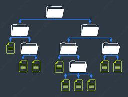

Objetivo: Fortalecer las competencias en la organización, manejo y administración de archivos y directorios, comprendiendo su estructura y funciones dentro de un sistema operativo, para optimizar la gestión de información de manera eficiente y segura.
El manejo de sistemas y redes implica un conocimiento sólido sobre la organización y gestión de los recursos digitales, siendo los archivos y directorios elementos fundamentales para garantizar un trabajo eficiente y seguro en entornos informáticos. Comprender la estructura de directorios, los tipos de archivos y sus extensiones, así como el uso correcto de los comandos internos y externos, permite al estudiante administrar la información de manera ordenada y funcional.
Mediante módulos prácticos, el estudiante explorará desde la estructura de directorios y la identificación de tipos de archivos y extensiones, hasta el uso de comandos internos y externos, la correcta aplicación de formatos y sintaxis, y la gestión de permisos de archivos y directorios. De esta manera, desarrollará habilidades que promuevan la productividad, la seguridad y la organización de la información en entornos de sistemas y redes.

Este recurso está dirigido al alumnado de Segundo de Bachillerato Técnico en Informática y se ha diseñado para desarrollarse en una sesión de trabajo, durante la cual se abordarán de manera integrada todos los contenidos propuestos, fomentando la práctica y la aplicación de los conceptos de archivos y directorios en un entorno de sistemas operativos y redes.